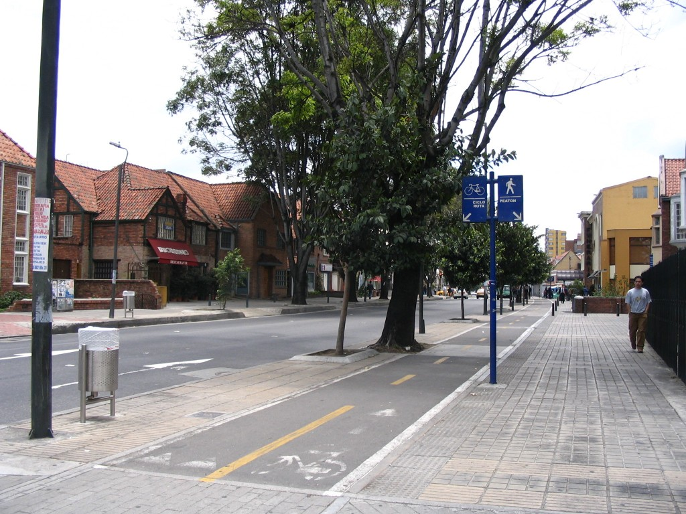

2012-06-07
The removal of I-195 from the Jewelry District is supposed to help spur Providence’s second renaissance by providing ample green- and brown-field development sites for a whole host of biomedical companies apparently dying to move to a state and city in fiscal crisis whose current population does not have the required skills to serve as an employment base.
Seriously, I am quite optimistic about the once-in-a-generation to develop a massive part of what should be an integral part of Providence’s downtown core 1. Buildings will come, even if it is a slow, grueling process. Hopefully jobs will follow. But a key first step the incredibly busy 2 I-195 commission must take is elevating Dyer Street to a new hub of activity.
This is a particularly important site for the redevelopment of Providence. One of the highest profile completed development projects in the Jewelry District has been Brown University’s Alpert Medical School at Ship Street and Eddy Street 3. Further down Eddy Street, we find one of the tragic failures of the Jewelry District, Narragansett Electric Lighting (Dynamo House), a hulking brick site left open to the elements that was set at one point to become a museum. One Davol Square, a popular site for entrepreneurs in Providence is found where Eddy meets Point Street.
Brown University has already purchased 200 Dyer Street, which sits to the north at the “start” of Dyer Street between Clinton and Dorrance. This site was recently renovated and is now home to Brown University’s Continuing Education, an adult education site primarily mid-career professionals and adults. Already 200 Dyer hosts forums intended for the Providence community and, along with expanding CE into so-called “executive master’s programs“, this site is likely to be a hub of substantial interaction between Brown and Providence residents.
It is easy to see that Eddy Street, from Ship Street to Point Street, is already an important hub of job-related activity in the Jewelry District. The very presence of an existing, huge, historic site between Alpert Medical School and a major center for startups makes it likely that this stretch could see real further development. And with Brown staking claim to the “mouth” of Dyer Street, the makings of a Brown University “West” campus 4 is coming into view.
Expanding Riverwalk Park into the space between Dorrance and Ship Street as planned should be the final piece to the Dyer Street puzzle 5.
It seems that turning Dyer Street into an “A” street filled with activity should be one of the easiest sells of all in the Jewelry District, given this is one of the few areas where actual purchases have taken place other than the land behind Johnson and Wales.
Luckily, as far as I can tell, Providence Planning’s vision for the repairing of the street grid in this area is right on the mark, because while the land adjacent to Dyer Street from Friendship Street to Ship Street is some of the most “shovel-ready” land in the Jewelry District, this stretch also represents some of the most obviously damaged by the highway 6. It is easily fixed. Dyer Street should be two ways all the way and not shift to a one-way at Peck Street. The remnants of an “on” ramp that serves as the northbound route connecting Ship Street and Peck Street should obviously be eliminated and subsumed in the expanded Riverwalk Park. An additional oddity left from another on ramp between Dorrance and Clifford Street should be removed, allowing the two-way Dyer to have a straighter path. Dyer should potentially be expanded to include bike lanes separated from traffic by trees on the eastern side.

Create a street like this. Encourage development on the west led by Brown University connecting Alpert Medical School to Brown Continuing Education. Bring in creative commercial development forming a continuous street wall of jobs from One Davol Square to the new, expanded park. Attach the proposed Greenway through the Jewelry District and the planned pedestrian bridge to Fox Point. Do all of this, and Dyer Street will become one of the most vibrant places in Providence.
I am not being sarcastic here, even if I’m generally dismissive and flippant about the wacky ideas that the “elite” in Providence and the state of Rhode Island have about this space ↩
Okay, so here I’m being sarcastic ↩
Dyer turns into Eddy past Ship ↩
I don’t think they use this term ↩
Although it appears the I-195 commission is getting cold feet on the expanse of this public space ↩
It will likely help to look at this view while reading this next section ↩